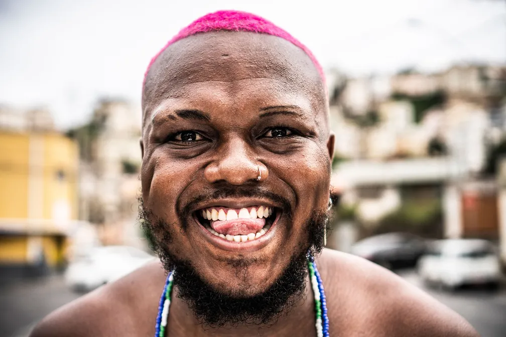
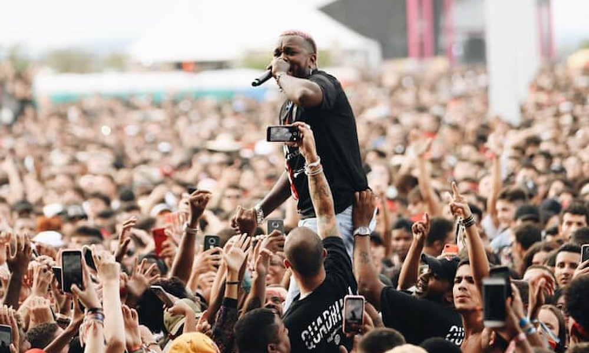

Um rapper mineiro

Djonga, nome artístico de Gustavo Pereira Marques, nasceu em 1994, em Belo Horizonte (MG), e cresceu no bairro de Santa Efigênia. Desde cedo, esteve inserido em um contexto marcado por desigualdade social, racismo e fortes contrastes urbanos, experiências que influenciaram diretamente sua visão de mundo. Nos primeiros anos, teve contato com a cultura hip hop por meio de batalhas de rima e movimentos culturais da cidade. Chegou a cursar História na universidade, o que contribuiu para o desenvolvimento de um pensamento crítico e socialmente consciente, elementos que mais tarde se tornariam centrais em sua trajetória artística.
A pegada musical do Djonga é marcada por letras intensas, diretas e carregadas de posicionamento. Seu rap mistura agressividade, emoção e crítica social, abordando temas como identidade, racismo, autoestima e vivências periféricas. Com uma entrega forte e sem concessões, Djonga construiu um estilo autêntico, onde a palavra é usada como instrumento de confronto, afirmação e resistência.
Suas músicas refletem ideais de resistência, consciência social e valorização da identidade negra. Djonga transforma vivências pessoais e coletivas em discursos de força, verdade e posicionamento, usando o rap como ferramenta de expressão, luta e transformação.
"Eles querem que a gente se odeie, mas eu aprendi a me amar."
Djonga
"Pra eles nota seis é muito
Pra nós nota dez ainda é pouco
Pros meus qualquer grana é o mundo
Pros deles qualquer grana é troco
E eu tô errado antes de fazer, defasar é o prazer
De quem tá com o controle do game
Não treme, não geme, se cala, vadia
Aqui é a porra do senhor de engenho"
Djonga - "Corra"

Você pode conhecer mais sobre a banda clicando aqui!